Edit candidates.jsonl: fix text, set verified to true. A record with source=corpus shows the corpus line; confirm the crop shows that line.
santhya-vol-1:2:7heading single human | 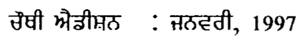 ਚੌਥੀ ਐਡੀਸ਼ਨ : ਜ਼ਨਵਰੀ, 1997 |
santhya-vol-1:2:10heading single human | 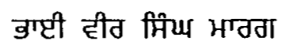 ਭਾਈ ਵੀਰ ਸਿੰਘ ਮਾਰਗ |
santhya-vol-1:2:11heading single human | 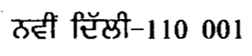 ਨਵੀਂ ਦਿੱਲੀ-110 001 |
santhya-vol-1:2:12heading single human | 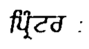 ਪ੍ਰਿੰਟਰ : |
santhya-vol-1:3:5commentary single human | 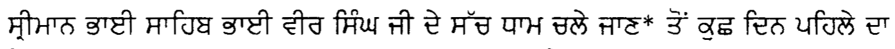 ਸ੍ਰੀਮਾਨ ਭਾਈ ਸਾਹਿਬ ਭਾਈ ਵੀਰ ਸਿੰਘ ਜੀ ਦੇ ਸੱਚ ਧਾਮ ਚਲੇ ਜਾਣ” ਤੋਂ ਕੁਛ ਦਿਨ ਪਹਿਲੇ ਦਾ |
santhya-vol-1:3:23commentary single human | 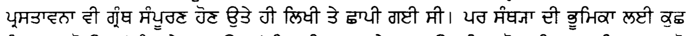 ਪ੍ਰਸਤਾਵਨਾ ਵੀ ਗ੍ਰੰਥ ਸੰਪੂਰਣ ਹੋਣ ਉਤੇ ਹੀ ਲਿਖੀ ਤੇ ਚਾਪੀ ਗਈ ਸੀ। ਪਰ ਸੰਥ੍ਯਾ ਦੀ ਭੂਮਿਕਾ ਲਈ ਕੁਛ |
santhya-vol-1:3:31footnote single human | - ਉ- |
santhya-vol-1:4:2commentary single human | 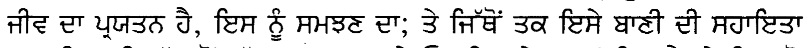 ਜੀਵ ਦਾ ਪ੍ਰਯਤਨ ਹੈ, ਇਸ ਨੂੰ ਸਮਝਣ ਦਾ; ਤੇ ਜਿੱਥੋਂ ਤਕ ਇਸੇ ਬਾਣੀ ਦੀ ਸਹਾਇਤਾ |
santhya-vol-1:4:4commentary single human | 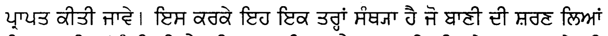 ਪ੍ਰਾਪਤ ਕੀਤੀ ਜਾਵੇ। ਇਸ ਕਰਕੇ ਇਹ ਇਕ ਤਰ੍ਹਾਂ ਸੰਥ੍ਯਾ ਹੈ ਜੋ ਬਾਣੀ ਦੀ ਸ਼ਰਣ ਲਿਆਂ |
santhya-vol-1:4:6commentary single human | 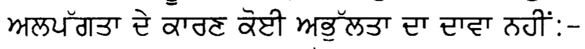 ਅਲਪਗਤਾ ਦੇ ਕਾਰਣ ਕੋਈ ਅਭੁੱਲਤਾ ਦਾ ਦਾਵਾ ਨਹੀਂ:- |
santhya-vol-1:4:15commentary single human | 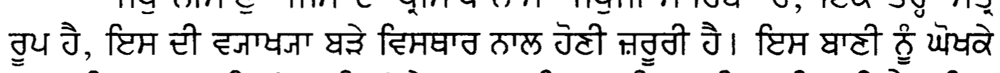 ਰੁਪ ਹੈ, ਇਸ ਦੀ ਵ੍ਯਾਖ੍ਯਾ ਬੜੇ ਵਿਸਥਾਰ ਨਾਲ ਹੋਣੀ ਜ਼ਰੂਰੀ ਹੈ। ਇਸ ਬਾਣੀ ਨੂੰ ਘੋਖਕੇ |
santhya-vol-1:4:25commentary single human | 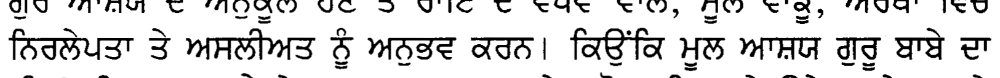 ਨਿਰਲੇਪਤਾ ਤੇ ਅਸਲੀਅਤ ਨੂੰ ਅਨੁਭਵ ਕਰਨ। ਕਿਉਂਕਿ ਮੂਲ ਆਸ਼ਯ ਗੁਰੂ ਬਾਬੇ ਦਾ |
santhya-vol-1:4:31footnote single human | ਰ (੩9੪੦ 4 9 530 |
santhya-vol-1:5:15commentary single human | 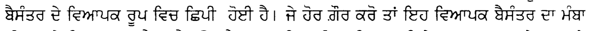 ਬੈਸੰਤਰ ਦੇ ਵਿਆਪਕ ਰੂਪ ਵਿਚ ਛਿਪੀ ਹੋਈ ਹੈ। ਜੇ ਹੋਰ ਗੌਰ ਕਰੋ ਤਾਂ ਇਹ ਵਿਆਪਕ ਬੈਸੰਤਰ ਦਾ ਮੰਬਾ |
santhya-vol-1:5:22commentary single human | 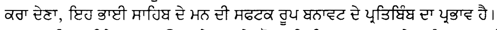 ਕਰਾ ਦੇਣਾ, ਇਹ ਭਾਈ ਸਾਹਿਬ ਦੇ ਮਨ ਦੀ ਸਫਟਕ ਰੂਪ ਬਨਾਵਟ ਦੇ ਪ੍ਰਤਿਬਿੰਬ ਦਾ ਪ੍ਰਭਾਵ ਹੈ। |
santhya-vol-1:45:33footnote single human | 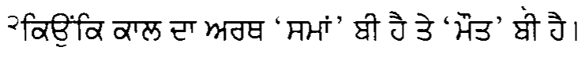 ੨ਕਿਉਂਕਿ ਕਾਲ ਦਾ ਅਰਥ 'ਸਮਾਂ' ਬੀ ਹੈ ਤੇ 'ਮੌਤ' ਬੀ ਹੈ। |
santhya-vol-1:80:13gurbani single human | 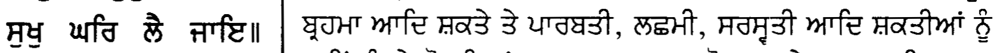 ਸਖ ਘਰਿ ਲੈ ਜਾਇ॥ | ਬ੍ਹਮਾ ਆਦਿ ਸਕਤੇ ਤੇ ਪਾਰਬਤੀ, ਲਛਮੀ, ਸਰਸ੍ਹਤੀ ਆਦਿ ਸ਼ਕਤੀਆਂ ਨੂੰ |
santhya-vol-1:201:8gurbani two-column human | 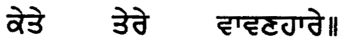 ਕੇਤੇ ਤੇਰੇ ਵਾਵਣਹਾਰੇ॥ |
santhya-vol-1:201:38gurbani two-column human | 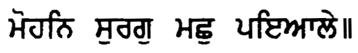 ਮੋਹਨਿ ਸੁਰਗੁ ਮਛੁ ਪਇਆਲੇ॥ |
santhya-vol-1:201:42commentary two-column human | 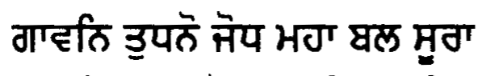 ਗਾਵਨਿ ਤੁਧਨੋ ਜੋਧ ਮਹਾ ਬਲ ਸੂਰਾ |
santhya-vol-1:201:49gurbani two-column human | 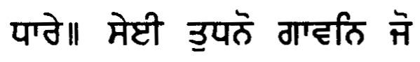 ਧਾਰੇ॥ ਸੇਈ ਤੁਧਨੋ ਗਾਵਨਿ ਜੋ |
santhya-vol-1:201:53gurbani two-column human | 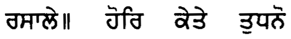 ਰਸਾਲੇ॥ ਹੋਰਿ ਕੇਤੇ ਤੁਧਨੋ |
santhya-vol-1:201:54commentary two-column human | 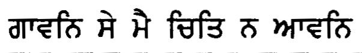 ਗਾਵਨਿ ਸੇ ਮੈ ਚਿਤਿ ਨ ਆਵਨਿ |
santhya-vol-1:280:7commentary single human | 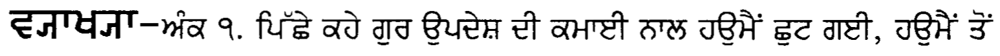 ਵਗਾਖ੍ਯਾ-ਅਕ ੧. ਪਿੱਛੇ ਕਹੇ ਗੁਰ ਉਪਦੇਸ਼ ਦੀ ਕਮਾਈ ਨਾਲ ਹਉਮੈਂ ਛੁਟ ਗਈ, ਹਉਮੈਂ ਤੋਂ |
santhya-vol-1:350:10commentary two-column human | 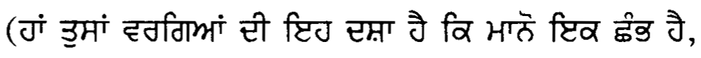 (ਹਾਂ ਤੁਸਾਂ ਵਰਗਿਆਂ ਦੀ ਇਹ ਦਸ਼ਾ ਹੈ ਕਿ ਮਾਨੋ ਇਕ ਛੰਭ ਹੈ, |
santhya-vol-1:350:19commentary two-column human | 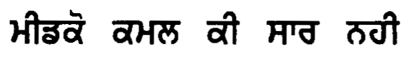 ਮੀਡਕੋ ਕਮਲ ਕੀ ਸਾਰ ਨਹੀ |
santhya-vol-1:350:23gurbani two-column human | 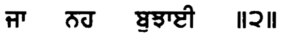 ਜਾ ਨਹ ਬੁਝਾਈ ॥੨॥ |
santhya-vol-1:350:24gurbani two-column human | 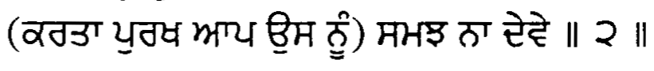 (ਕਰਤਾ ਪੁਰਖ ਆਪ ਉਸ ਨੂੰ) ਸਮਝ ਨਾ ਦੇਵੇ ॥ ੨ ॥ |
santhya-vol-1:420:17gurbani single human | 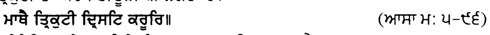 ਮਾਥੈ ਤ੍ਰਿਕੁਟੀ ਦ੍ਰਿਸਟਿ ਕਰੂਰਿ॥ (ਆਸਾ ਮ: ੫-੯੬) |
santhya-vol-1:500:39commentary single human | 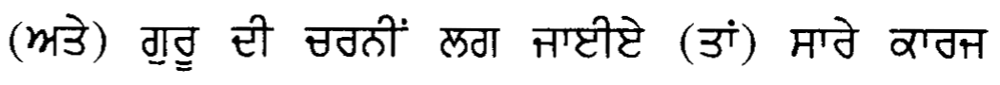 (ਅਤੇ) ਗੁਰੂ ਦੀ ਚਰਨੀਂ ਲਗ ਜਾਈਏ (ਤਾਂ) ਸਾਰੇ ਕਾਰਜ |